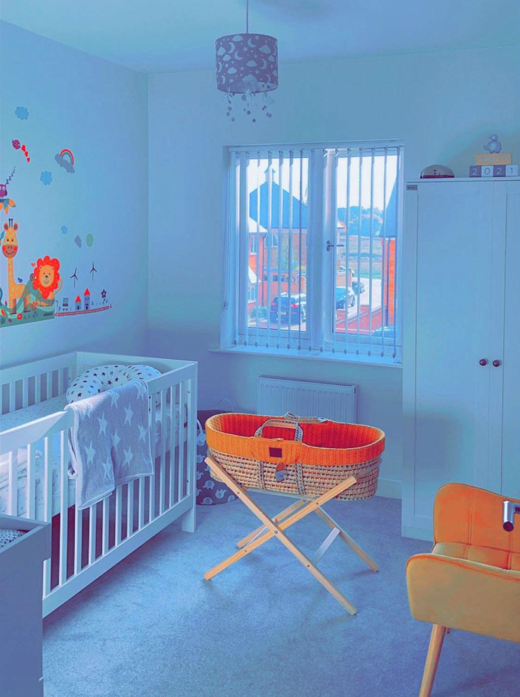
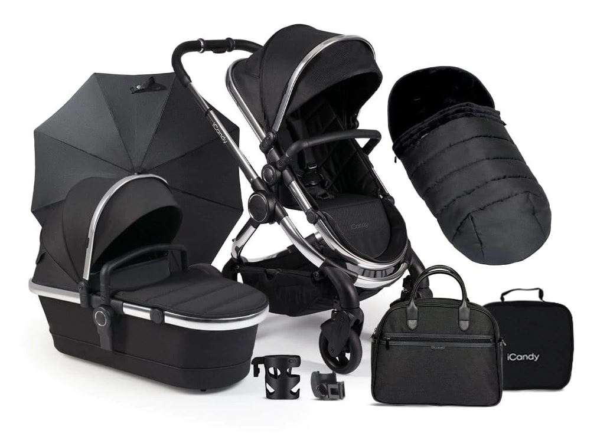
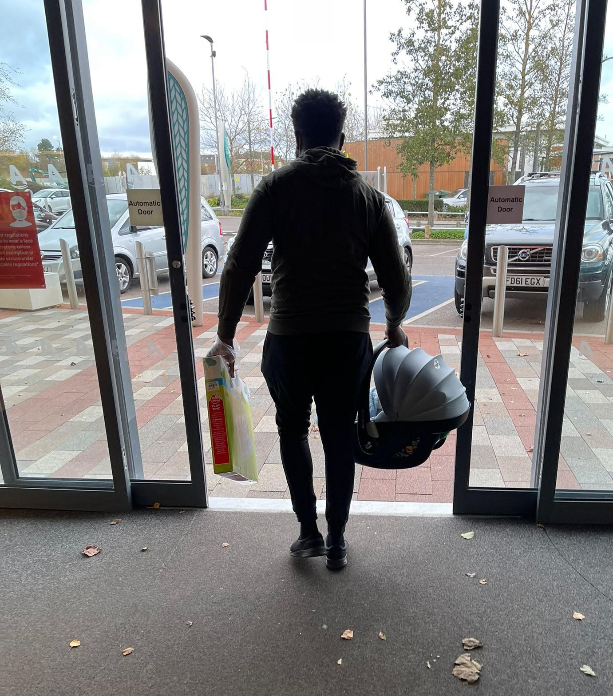

All parents remember the day they found out they were going to become one.
The journey that ensues for the following 9 months can be lonely if you aren't sure how to prepare.
But having the right information can take away that lonely feeling.
Like having an exprienced friend or sibling with all the answers that you can call on.
This is why NU2BABY exists.


As baby grows in the womb and mummy progresses through the weeks, your midwife meetings are key to a safe birthing experience. Here's how to make the most of these appointments

A dedicated nursery room themed for your young king or queen is a great environment for your baby to be familiar with as their own space. Let's explore the possibilies here

Ever heard of Isofix? No, I hadn't either, but we're best friends now :) Oh and Sterilizers? That was new to me too! How about a CarryCot? Ok I'll stop. But...can you tell your Tommee Tipee from your MAM bottles? Step this way to learn more
Babies need a lot of clothes - just like adults. But can you tell your bodysuits from your sleepsuits? Scratch proof mitts and Muslin cloths? How about deciding between a Moses Basket or Next-To-Me crib? Let's explore bedding and clothing!

The due date is literally days away and mummy's water may be about to break. You absolutely NEED to be be prepared to head to the hospital at a moments' notice with all personal items that will be needed.So what's in the bag? Find out here

You've worked so hard and spent a lot in preparation for the baby. Now the baby is in your hands safe at home and mummy is recovering. What happens next? I can share from my experience